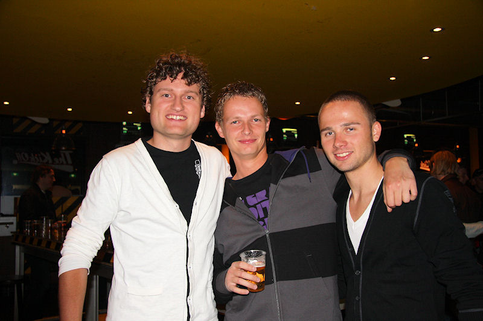

Het AEVITAE doek zeilt over west.
Addo prutst waarna Nilsson na 19 seconden het allersnelste tegendoelpunt
allertijden mag aantekenen: 0-1, (1'). Het ontgaat de arbitrage
dat Nilsson duidelijk buitenspel staat.
In tegenstelling tot Castro rammelde Van Velthuizen alle ballen uit zijn
doel. Kah wordt binnen de zestien naar de grond getrokken maar
Van Hulten weigert een strafschop te geven.
De keeper ligt al in zijn doel als Junker de bal over de lijn werkt: 1-1,
(27').
Ingenieuze vrije trap. Bodor, noch Linssen noch Hadouir nemen hem. Hofs
stapt als eerste uit het Vitesse-muurtje omdat hij ziet dat het
schot van De Jong gaat komen (links beneden, niet zichtbaar op deze foto).
Zijn sliding op De Jong voorkomt niet dat er een gevaarlijk
schot richting doel gejaagd wordt dat echter wederom door een vliegende Van
Velthuizen uit de lucht wordt geplukt.
De Roda-defensie slaapt opnieuwr wanneer Kolk naar de achterlijn soleert en
de bal afspeelt op de inlopende Hofs die 1-2 scoort, (42').
Vitesse-verdediger werkt de bal in eigen doel: 2-2, (54').
Roda komt zowaar op voorsprong middels een volley van Hadouir: 3-2, (60').
Scheidsrechter Van Hulten hield lang de kaarten op zak. Van Diermen, Molhoek
en Nilsson kregen in de tweede helft allen geel.
Slecht verdedigingswerk van Addo stelt invaller Kaloglu in staat een schot
af te vuren waar Castro onderdoor duikt: 3-3, (76').
Nadat Roda een penalty onthouden is bna een aanval van Van Velthuizen op
Skoubo is Kolk in de slotfase attent bij een afvallende bal die
hij met een volley in het doel schiet: 3-4, (89').
Feest bij de best wel 50 meegereisde supporters van Vitesse.
De "Schwulen van Waubach".
Hier is iemand de weg kwijt.
De Kickoff werd bezocht door Vormer, Lachambre en nog iemand. Moeilijk te
zien vanwege drie opdringerige groupies.

Waarom zo vrolijk?
Na de tweede nederlaag op rij en met de uitwedstrijd tegen PSV voor de boeg
komt de rode lantaarn duidelijk in zicht.